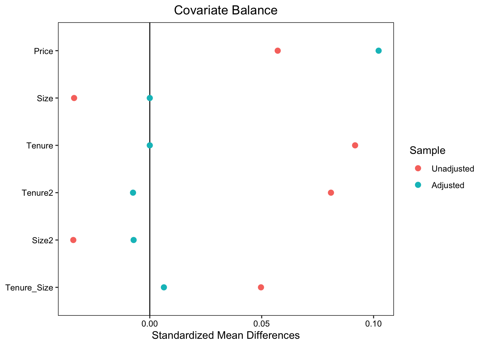
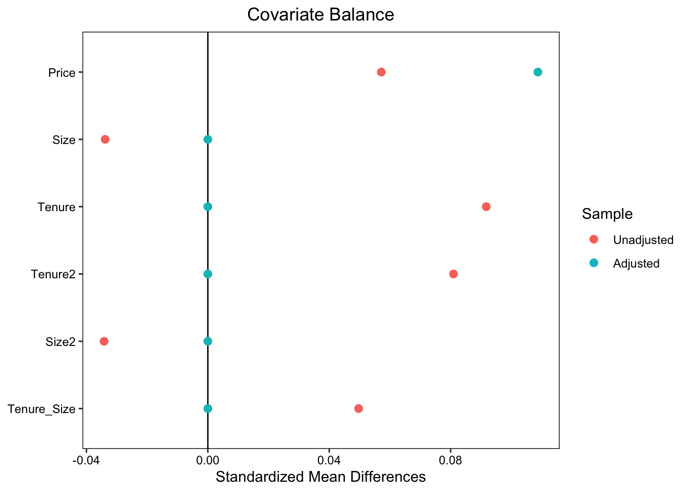
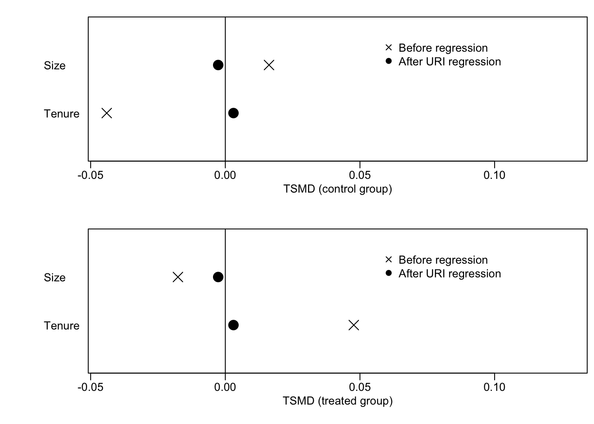
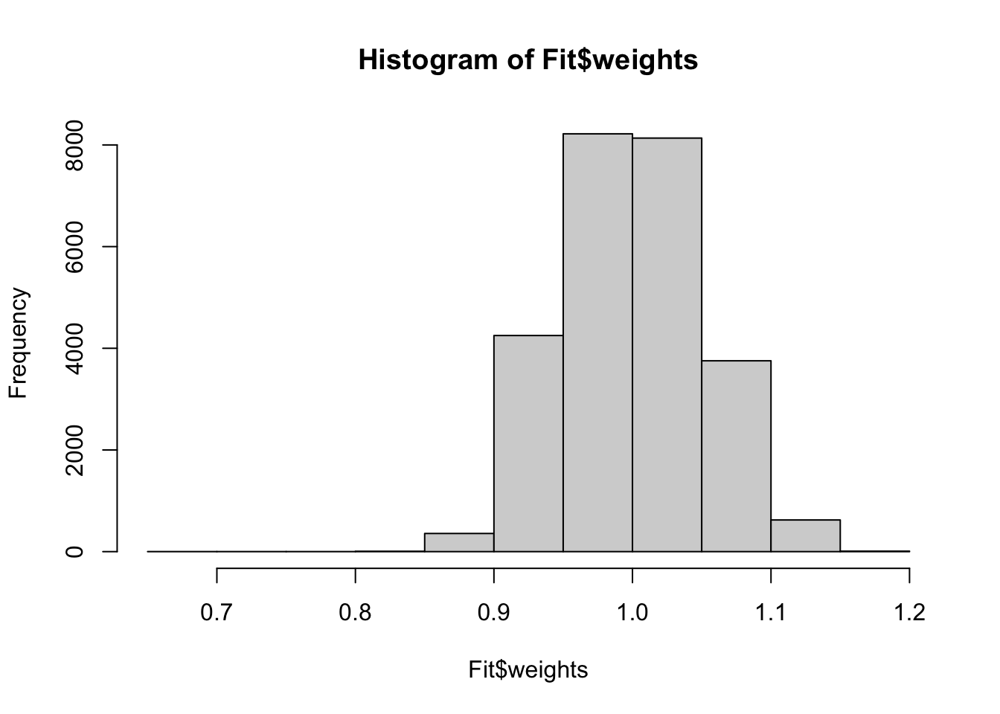
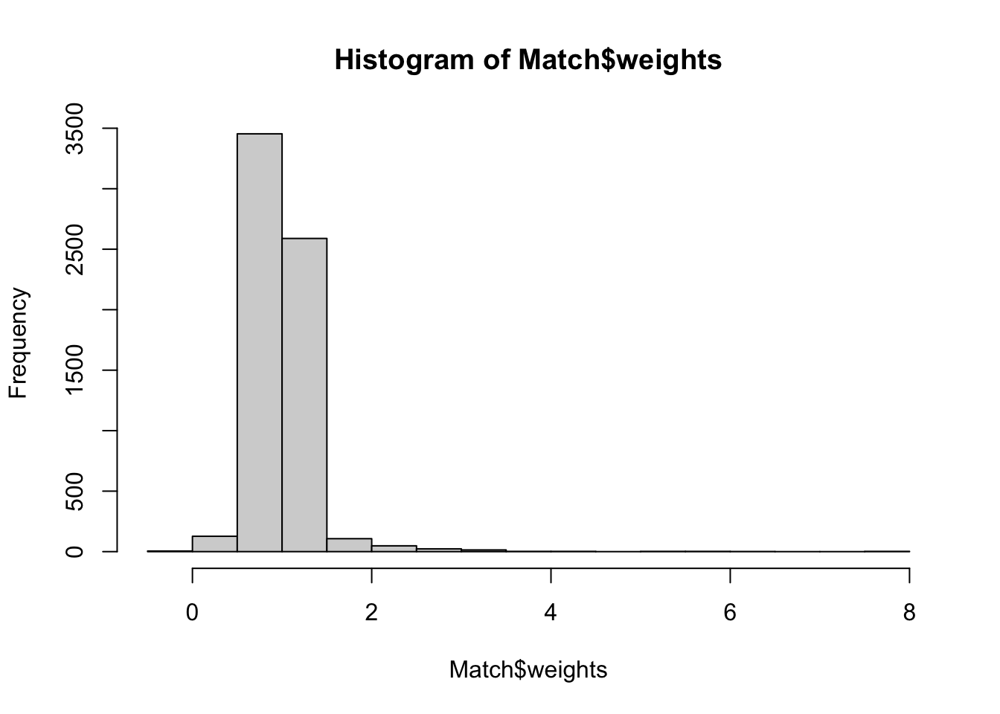

3 特徴のバランス
\(X\) の組み合わせが多く、Balancing weightsを計算することが困難な場合、\(X\)の分布を近似的にバランスさせることが有力です。 このような方法は大きく、balancing approachとmodelling approach に大別できます (Chattopadhyay, Hase, and Zubizarreta 2020)。 本節ではbalancing approachの代表例である、分布を特徴づける代表的な値である平均値や分散などをバランスさせるアプローチを紹介します。
3.1 OLS
近年の研究により、線型モデルのOLS推定は、Moment Balanceを達成することが確認されています (Imbens 2015; Chattopadhyay and Zubizarreta 2023)。 Chattopadhyay and Zubizarreta (2023) は、以下を証明しました。
OLSの性質
- \(D=\{0,1\}\)
?eq-balance は、\(X\) の平均値を \(D=\{0,1\}\) 間で均質化していることを意味しています。 ?eq-normal は、ウェイトとして総和を1に基準化しています。 すなわちStep 1において、平均値をバランスさせるウェイトの中から、最も分散が小さいものを選んでいることを意味しています。 Step 2において、このウェイトを用いた平均差を計算しています。
ウェイトの分散は、最終的な推定結果の推定誤差に影響を与えます。 一般に、ウェイトの分散が小さいと、推定誤差が削減される傾向があります。 OLSは、平均値のバランスを達成するウェイトから分散が最小となるものを選ぶため、推定誤差が小さくなる傾向を持ちます。
3.1.1 例
部屋の広さ (Size) と 築年数 (Tenure) をバランスさせた後に、2022/2021年の平均取引価格差を推定します。 \(Price\sim D + Size + Tenure\) をOLS回帰すると、以下のようなバランスが達成されます。
赤点 (Unadjusted) は、バランス前の単純平均差を表します。 価格が大きく上昇していますが、取引物件の部屋の広さは狭くなり、築年数は古くなっています。 青点 (Adjusted)は、OLSによる暗黙のバランス後の差を示しています。 結果、SizeやTenureの平均値は完全にバランスしており、結果平均取引価格差も上昇しています。 Tenure2やSize2は、築年数や部屋の広さの二乗項(分散)、Tenure_Sizeは交差項(共分散)を示しており、これらについてはOLSを行ったとしてもバランスしていません。
分散や共分散もバランスさせるためには、二乗項や交差項もモデルに導入したモデル \(Price\sim D + Size + Tenure + Size2 + Tenure2 + TenureSize\) をOLS推定します。 結果、以下の図の通り、分散や共分散もBalanceします。

3.1.2 Post selection
OLSにおいては、分布の特徴をどこまでバランスさせるのかが問題となります。 事例数が十分あれば、3乗項などの高次項もバランスさせることは可能です。 しかしながら事例数が少ない場合、大量のモーメントをバランスさせると、推定誤差が大きくなってしまいます。
このような問題に対して、OLS推定を行う前に重要な変数のみを選択することが必要となります。 変数選択を行う方法としては、Chernozhukov, Hansen, and Spindler (2015) がPost Double Selectionというデータ主導の手法を提案しており、幅広く応用されています。 Angrist and Frandsen (2022) は、変数選択について、より入門的な紹介を行っています。
Post Double Selecctionでは、\(X\)の中から、\(Y\) または \(D\) について予測モデルを推定した際に使用される変数のみを使用し、OLS推定を行います。 予測モデルは、LASSOにより推定されます。 ここで“または”であることに注意してください。 例えば\(Y\) の予測モデルからは排除された変数であったとしても、\(D\)の予測モデルに利用されているのであれば、OLS推定に採用されます。 このような”慎重な”変数選択によって、信頼区間の計算可能性などの統計的性質を保証しています。
当該手法はhdm packageを用いて実装できます。
Y = Data$Price # Outcome
D = Data$D # Treatment
X = select(
Data,
Size,
Size2,
Tenure,
Tenure2,
Tenure_Size) # Control
Fit = hdm::rlassoEffect(
x = as.matrix(X),
d = D,
y = Y
) # Fit post double selection
summary(Fit) # Show results[1] "Estimates and significance testing of the effect of target variables"
Estimate. Std. Error t value Pr(>|t|)
d1 3.8506 0.3304 11.65 <2e-16 ***
---
Signif. codes: 0 '***' 0.001 '**' 0.01 '*' 0.05 '.' 0.1 ' ' 1選択された変数は、以下のように表示できます。 部屋の広さと築年数の平均値のみが、選択されたことが確認できます。
Fit$selection.index # Show selected X Size Size2 Tenure Tenure2 Tenure_Size
TRUE FALSE TRUE FALSE FALSE 3.2 OLSの問題点と解決策
OLSにより暗黙のうちに計算されるWeightは、平均値をバランスします ?eq-balance 。 しかしながら、Balancing weightsに求められる他の性質は必ずしも満たされません。
3.2.1 解釈の難しさ
バランス後の、\(X\) の平均値がどのような水準になるのか、一般に不透明です。 結果を解釈するためには、\(X\) の平均値は明確な水準、例えばデータ全体での平均値と一致させることが望ましいです。 しかしながら、OLSはそのような水準との一致を保証しません。
OLSによるバランス後の\(X\)の平均値について、lmw packageにより診断できます。

黒丸はOLSによるバランス後、ばつ印はバランス前の平均値を示しています。 Control groupは、\(D=0\) (2021年)、Treatment groupは、\(D=1\) (2022年)の値です。 0線は、サンプル平均を示しています。
同図からバランス前は、2022年についてはSizeがサンプル平均よりも小さく、Tenureは長いことが確認できます。 黒丸を見ると、OLSによるバランス後はどちらも2022年と2021年の間で平均差がなくなることが確認できます。 ただし ０線からは乖離しており、サンプル平均とは一致していないことが確認できます。
3.2.2 負の荷重
Balancing weightsは、正の値を取ることが望まれます。 しかしながらOLSが生成するWeightは、負の値を取る可能性があり、ミスリーデイングな推定結果をもたらす可能性があります。
lmw packageは、OLSが生成するweightsの値を計算します。 例えばhist関数により、ヒストグラムとして可視化できます。

本応用例では、負のweightsは発生していないことが確認できました。
3.2.3 解決策
\(D\)と\(X\)の交差項を含めた以下のモデルを推定した、\(\beta_{D},..,\beta_{DL}\)の平均値は、サンプル全体の\(X\)の平均値とバランス後の平均値を一致させるWeightを活用した平均の差と一致します(Chattopadhyay and Zubizarreta 2023)。 \[Y\sim D\times (\beta_D + \beta_{D1}X_1+..+\beta_{DLX_L}) + \beta_0 + \beta_1X_1+..+\beta_LX_L.\] ただし負のweightは以前として生じる可能性があります。
負のWeightを発生させない方法としては、Entropy weights (Hainmueller 2012) や Stable weights (Zubizarreta 2015) が有力です。 これらの手法では、サンプル平均との一致や正の値を取ることを条件として課した上で、weightを計算します。 このためOLSが持つ問題点の多くを克服しており、より信頼できるバランス後の比較分析が可能です。 これらの手法は WeightIt package (Greifer 2024) で容易に実装できます。
3.3 Rによる実践例
\(D\)と\(X\)の交差項を含めたモデルのOLS推定、およびその性質の診断は、以下のパッケージを用いて実装できます。
readr (tidyverseに同梱): データの読み込み
lmw: OLSが計算するbalance weightsを計算
marginaleffects: 交差項を含めたモデルでの推定
3.3.1 準備
データを取得します。 \(D\) として、中心6区かそれ以外で、1/0となる変数を定義します。 シンプルな比較分析について信頼区間は、データ分割は不要です。
Data = readr::read_csv("Public.csv") # データ読み込み
Data = dplyr::mutate(
Data,
D = dplyr::if_else(
LargeDistrict == "中心6区",1,0
) # 中心6区であれば1、それ以外であれば0
)3.3.2 Balanced comparson by OLS
交差項を含むOLSによりBalance させた推定結果は以下で導出できます。 Size,Tenure,StationDistanceの平均値、分散、共分散を、中心6区とそれ以外で一致させています
OLS = lm(
Price ~
D*(I(Size^2) + I(Tenure^2) + I(StationDistance^2) +
(Size + Tenure + StationDistance)**2) + # DとXの交差項
I(Size^2) + I(Tenure^2) + I(StationDistance^2) +
(Size + Tenure + StationDistance)**2, # X,
Data
)
marginaleffects::avg_comparisons(
OLS, # 計算の元となるモデル
variables = "D", # Dについて平均差を推定
vcov = "HC4") # ロバストな信頼区間
Estimate Std. Error z Pr(>|z|) S 2.5 % 97.5 %
19.4 0.705 27.6 <0.001 554.2 18.1 20.8
Term: D
Type: response
Comparison: mean(1) - mean(0)
Columns: term, contrast, estimate, std.error, statistic, p.value, s.value, conf.low, conf.high, predicted_lo, predicted_hi, predicted バランスさせない平均差(以下)と比べると、平均差が少し減少しています。
estimatr::lm_robust(
Price ~ D,
Data
) Estimate Std. Error t value Pr(>|t|) CI Lower CI Upper DF
(Intercept) 38.03972 0.3182179 119.5399 0.000000e+00 37.41591 38.66354 6376
D 20.94057 1.2529064 16.7136 2.084367e-61 18.48446 23.39669 63763.3.2.1 Balanced Weight
lmw パッケージのlmw関数を用いれば、OLSが算出しているBalance weightsを計算できます。
Match = lmw::lmw(
~ D + I(Size^2) + I(Tenure^2) + I(StationDistance^2) +
(Size + Tenure + StationDistance)**2, # 平均、分散、共分散をバランス
Data,
method = "MRI" # DとXの交差項を導入
) # Weightの算出
hist(Match$weights) # Weightのヒストグラムを算出
少数ですが負のWeightが発生しています。